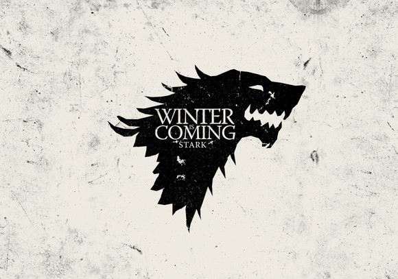
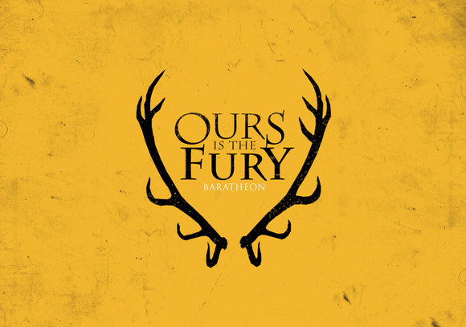
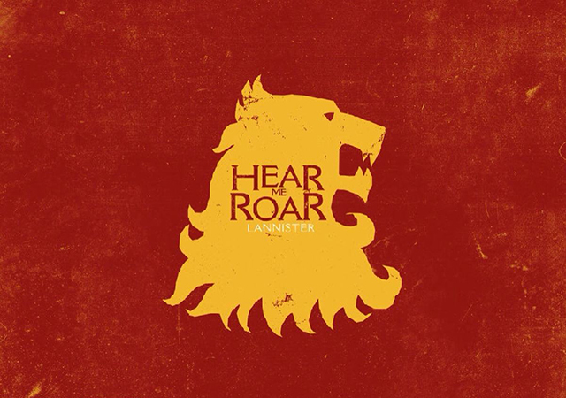
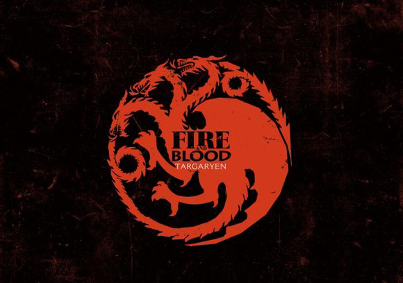
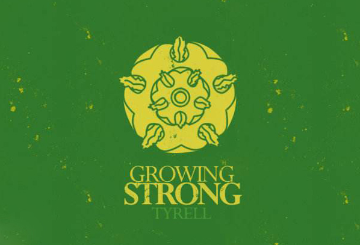
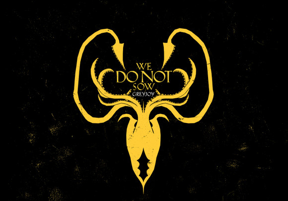
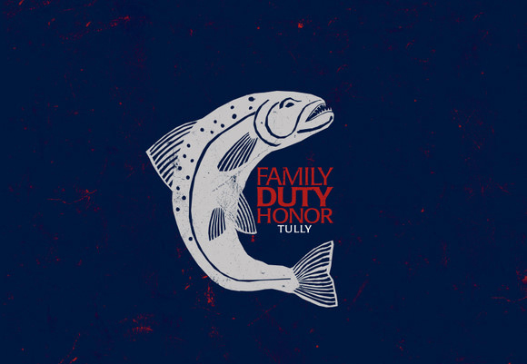
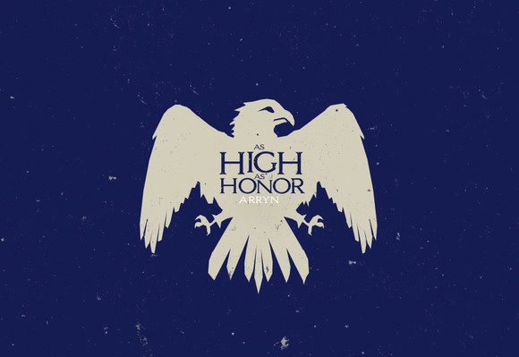
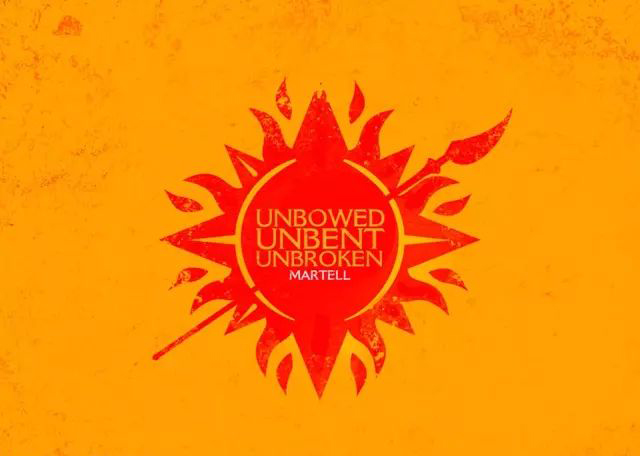

2017-04-17
冰与火之歌，七大王国，九大家族！

凛冬将至（Winter is Coming）

临冬城的史塔克家族 （House Stark of Winterfell）是北境最重要的家族，手下封臣众多。家族族堡为临冬城。其族徽是白色雪原上银灰色的一只雪原奔狼。家族箴言为"凛冬将至"（Winter is Coming）。书中数个重要视点人物都来自于这个家族。 史塔克是个古老的家族，其历史可追溯到数千年前英雄纪元的传奇人物——“筑城者”布兰登，他还是临冬城的筑造者与奠基人。史塔克家族的血脉直接传承自先民，依旧遵循古老的传统，信奉森林里的旧神。自“筑城者”布兰登始，数千年来史塔克家族一直是北境之王。但在北境，史塔克家族也并非安枕无忧。恐怖堡的波顿家族一直是其最大的敌手，直到大约1,000年前才屈膝臣服。 史塔克家族中最后一位北境之王是托伦•史塔克，他在征服战争末期向“征服者”伊耿屈膝臣服。从那时起，史塔克家族就成为七大王国的北境守护。 大约在213AL，史塔克家族曾面临危机：铁民侵袭，时任家族领主伯隆•史塔克与达衮•葛雷乔伊大王大战一场、身受重伤、奄奄一息。史塔克夫人与另外四个史塔克寡妇在其死后争夺史塔克家族的继承权，潜在的继承人为数甚多，其中还有十来个姓史塔克的小孩。 后来，史塔克家族在反叛坦格利安家族的“篡夺者战争”中发挥了重要的作用，但在此之后，却相对沉寂，并未参与太多七国事务。史塔克家和卡史塔克家族同宗同源，并且在北境的其他地方有一些远亲，可能在白港和荒冢屯。 在五王之战中，史塔克家族联合徒利家族将兰尼斯特从河间地区赶走。但是在此过程中，波顿家族从其手中夺走了北境的支配权，史塔克家族成员也被杀或者被迫藏匿。
怒火燎原（Our is the Fury）

拜拉席恩家族（House Baratheon ）是风暴地的守护家族。他们的家徽是金底上黑色的宝冠雄鹿，族语是“怒火燎原”Our is the Fury。 拜拉席恩家族是最年轻的大家族，祖先是奥里斯•拜拉席恩，伊耿一世手下最得力的将军（传言也是伊耿的私生子兄弟）。从母系算起，拜拉席恩是风暴国王的后代。奥里斯将最后的风暴国王“骄傲的”亚尔吉拉击杀后，娶了他的女儿为妻，并继承了风暴王的家族的旗帜、家徽和箴言。而风暴国王的历史可以追溯到英雄纪元，由传奇英雄杜伦创立。篡夺者战争结束后，拜拉席恩家族在史塔克家族、徒利家族、艾林家族以及之后的兰尼斯特家族的支持下登上铁王座。 五王之乱后，拜拉席恩家族分裂为君临城的乔佛里国王，龙石岛的史坦尼斯国王，风息堡的蓝礼国王所分别领导的三支。 除了蓝礼保留了古老的家徽之外，君临的拜拉席恩家族的第二任统治者，乔佛里一世创建了新的家族徽章，拜拉席恩家族的金底黑色宝冠雄鹿，与兰尼斯特家族的深红底色金狮子。下一任国王托曼一世沿用了这一徽章。由于现在的统治者只是个孩子，拜拉席恩家族现在实际由兰尼斯特家族掌权。
听我怒吼（Hear Me Roar）

凯岩城的兰尼斯特家族（House Lannister of Casterly Rock）是维斯特洛的主要家族之一，世代兼领西境守护之职（西境首府在凯岩城）。家徽是绯红色土地上金黄色的怒吼雄狮，家族箴言是“听我怒吼！”（Hear Me Roar）此外，还有一句广为流传的非正式格言:“兰尼斯特有债必还。”——在维斯特洛，其知名度甚至超过了家族箴言。 兰尼斯特是安达尔冒险者和古代凯岩王的女儿联姻产生的后代，而国王本身的血统则传承自英雄纪元一位极富传奇性的骗术高手“机灵的”兰尼。传说中兰尼不用一刀一剑，只凭计谋就从凯斯德利家族手中骗到了凯岩城。后来，兰尼斯特家族作为国王占据凯岩城数千年时间，直到在伊耿征服战争的怒火燎原一役中惨败。当时的凯岩王罗伦•兰尼斯特向伊耿屈膝臣服，随后成为西境的大领主，仍然保留对凯岩城的统治权，并作为西境守护世代镇守。 泰陀斯•兰尼斯特统治期间，家族声望跌至谷底，泰陀斯的软弱令他经常遭受封臣的欺辱。直到其子泰温•兰尼斯特继位，才得以重振家声，重现昔日辉煌。由于凯岩城和金牙城出产丰富的金矿，兰尼斯特是七国最富有的家族。 兰尼斯特家族曾拥有一把家传瓦雷利亚钢剑光啸，但是现在已经丢失。 在篡夺者战争期间，兰尼斯特家族始终按兵不动，直到雷加•坦格利安在三叉戟河之役中丧命之后，才加入劳勃•拜拉席恩一方，随即迅速出兵拿下了君临。当时身为御林铁卫之一的詹姆•兰尼斯特手刃末代龙王伊里斯二世，为坦格利安王朝近三百年的统治画上了句点。
血火同源（Fire and Blood）

坦格利安家族（House Targaryen）坐镇七大王国的都城君临以及岛屿城堡龙石岛，统治维斯特洛近三百年之久。坦格利安家族的纹章是黑底红色的独身三头喷火龙，代表着征服者伊耿以及他的姐妹维桑尼亚和雷妮丝。坦格利安家族的族语是“血火同源”(Fire and Blood)。 坦格利安家族并非维斯特洛的原住民，他们来自于东大陆瓦雷利亚的自由堡垒。瓦雷利亚的末日浩劫之前，大灾变摧毁了那里的古代文明，之后坦格利安家族来到维斯特洛海岸边龙石岛的岛屿要塞，那时这里是瓦雷利亚最西边的军事基地。《群鸦的盛宴》中提到的书，托马克斯学士的著作《龙王们：坦格利安家族从流浪到神化的历程，兼论巨龙之生死》，似乎暗示坦格利安家族是从瓦雷利亚流亡的。坦格利安家族摒弃了瓦雷利亚的神祇，改为信仰安达尔人的七神，这是维斯特洛支配性的宗教信仰。大灾变一个世纪之后，被称为“征服者”的伊耿•坦格利安一世，带着他的三只龙和军队，登陆于日后被称作君临的地方，开始了他对维斯特洛大陆的征服。七大王国中的六个最终陷落于伊耿的掌握之中。 坦格利安家族与维斯特洛其余的贵族家庭截然不同，他们遵循瓦雷利亚近亲通婚的传统：兄与妹（姐与弟），表亲与表亲（堂亲与堂亲），舅舅与外甥女（叔叔与侄女）。他们继承了异常，甚至被形容为“非人”的美貌。“真龙血脉”一词就是用来描述坦格利安家族一些独有的特征：银金或白金的发色，淡紫、靛青或紫罗兰色的眼睛。坦格利安家族的某些成员对热的忍耐性极高，但他们并不对火绝对免疫。坦格利安家族极其分支黑火家族的部分成员拥有预言梦的能力。 坦格利安家族被称为龙王，他们比其他人更亲近龙。伊耿一世征服维斯特洛时将龙引进，家族一直拥有和支配着龙，直到最后的两只龙死于“龙祸”伊耿三世统治时期。 或许是由于近亲通婚的传统，坦格利安家族有疯狂的倾向，杰赫里斯•坦格利安二世曾说，每当一位坦格利安降生，诸神就将硬币抛向空中，选择疯狂或是伟大。 “ 风暴降生”丹尼莉丝•坦格利安成为孕育三头雏龙的龙母，三百年后龙族再临。坦格利安是否会再一次崛起？
生生不息（Growing Strong）

高庭的提利尔家族（House Tyrell of Highgarden）是七国重要家族之一，统辖河湾地，族堡高庭。提利尔家族庞大而富有，富裕程度仅次于兰尼斯特家族，但能动员出更强的军事力量。此外，如果提利尔家族征召手下封臣雷德温家族和盾牌列岛的舰队，加上海岸其他效忠家族的海军，那么提利尔家族能拥有的的海上军事力量不输于皇家舰队。 在七大王国中，提利尔是个历史悠久，而崇尚骑士精神的家族，他们常以'边疆守护'和'河湾地至高统领'自封。通常他们还拥有南境守护的头衔。家族族徽是一朵盛开于青翠绿野之上的金玫瑰；箴言为：生生不息。(Growing Strong) 提利尔家族的血脉可以通过母系追溯到传奇的英雄纪元河湾地的先王“青手”加尔斯。（说明其家族起源不迟于几千年前的安达尔人入侵时期。）提利尔家族本来效忠于河湾地的王族家族——园丁家族。园丁家族历史上多次与其封臣比如佛罗伦家族或者提利尔家族通婚。当最后的河湾王、园丁家族的孟恩九世死于怒火燎原之役后，高庭的总管哈伦•提利尔向征服者伊耿一世献出了城池，为此伊耿将高庭封给提利尔家族。 在篡夺者战争中，提利尔家族依旧忠于“疯王”伊里斯二世。虽然梅斯•提利尔在篡夺者战争中的白杨滩之战中击败了劳勃•拜拉席恩，但是在君临沦陷疯王败北之后，提利尔家族向胜利者称臣。劳勃•拜拉席恩原谅了提利尔并且接受了南境的效忠。 在劳勃国王死后，提利尔家族拥立了自立为王的蓝礼•拜拉席恩，梅斯公爵把自己的女儿玛格丽•提利尔嫁给了他。在蓝礼被刺杀之后，提利尔与兰尼斯特家族结盟，在黑水河之战完败了史坦尼斯•拜拉席恩。因此梅斯公爵获得了御前会议中的一席。他最宠爱的幼子洛拉斯•提利尔被册封为御林铁卫，玛格丽•提利尔继而被许配给了乔佛里一世。但是，梅斯公爵的母亲奥莲娜•雷德温，并不欣赏这门婚事，暗地里与小指头合谋在乔佛里的婚宴上毒死了他。然后根据婚约，玛格丽•提利尔再度许配给托曼一世国王。
强取胜于苦耕（We Do Not Sow）

葛雷乔伊家族（House Greyjoy）是维斯特洛几大家族中的一员，在派克城中统治着铁民与铁群岛。铁群岛位于维斯特洛大陆西面，环境严酷，地形峻峭。家族的纹章是一只黑色底衬的金色海怪，族语为：“强取胜于苦耕”（We Do Not Sow）。 葛雷乔伊家族是英雄纪元时期灰海王的后裔。坦格利安征服维斯特洛以后，葛雷乔伊成为铁群岛的首领。伊耿一世允许铁民们选出自己的领导者，于是他们选择了维肯•葛雷乔伊和他的家族。[3]葛雷乔伊家族自此开始统治时代，在派克岛坚固的城堡之中治理着铁群岛。 葛雷乔伊家族一向与其他大家族保持距离，极少参与大陆（铁种称之为青绿之地）发生的各种事件，很多时候甚至掉头专注于自己古老的劫掠事业当中，沿着附近大陆的海岸线打劫村镇。在篡夺者战争期间，葛雷乔伊一直置身事外。之后巴隆•葛雷乔伊举兵反叛铁王座，自立为铁岛之王。巴隆的反叛以失败告终，他的舰队被烧毁，两个年长的儿子罗德利克和马伦在战斗中遭到杀害，三子席恩被史塔克公爵收为质子。 劳勃•拜拉席恩死后，巴隆拒绝了罗柏•史塔克结盟的提议，自立为铁岛与北境之王，攻占颈泽，并在史塔克家族在北方的领地沿岸大肆劫掠。 巴隆•葛雷乔伊死后不久，其弟攸伦•葛雷乔伊在经历了一场漫长的航行之后返回铁群岛，并在数千年以来第一次重新召开的选王会上被选为王。
家族，责任，荣誉（Family Duty Honor）

奔流城的徒利家族（House Tully of the Riverrun）是河间地的首要家族，也是三叉戟河流域的统治者。家堡为奔流城。其族史可以追溯到英雄纪元的奔流城领主们，但他们从未称王。他们的家徽是腾跃于红蓝条纹底上的银色鳟鱼，家族箴言则是“家族，责任，荣誉。”(Family Duty Honor) 徒利家族雄踞奔流城已逾千年，其间侍奉过数位国王自己却从未称王。征服战争期间徒利家族带领三河流域诸侯背叛了国王黑心赫伦加入了征服者伊耿，并因表现突出被擢升为三叉戟河统治者。 篡夺者战争期间，由于和史塔克联姻，徒利家族也参与了叛军。 在五王之战中，徒利家族战败，艾德慕公爵也在红色婚礼中被俘。由于支持史塔克家族，徒利家族的土地、头衔和收入均王室剥夺、转给奔流城的佛雷家族，对河间地的统治权则被转给赫伦堡的贝里席家族。
高如荣耀（as High as Honor）

鹰巢城的艾林家族（House Arryn of Eyrie）是谷地最重要的家族。艾林家族的封城为鹰巢城，此外他们也有许多其他城堡。他们的标志是天蓝色底色上，一只在白色月亮之上翱翔的天蓝色的鹰。他们的族语是“高如荣耀”(as High as Honor)。 艾林家族的历史可追溯到古老的安达尔人入侵维斯特洛时期。艾林家族通常只与其他安达尔贵族通婚，因此他们具有最纯正的安达尔贵族血统。 在安达尔人到来之前，谷地由先民的山脉王统治。据半官方记载，大约6,000年前，阿提斯•艾林爵士杀死了最后一任山脉王，艾林家族从此成为了山脉和谷地之王。他们把这片土地重命名为艾林谷，国王头戴猎鹰王冠。后来艾林家族臣服于坦格利安家族的征服者伊耿，并被封为世袭的东境统领与东境守护。在篡夺者战争中，艾林家族支持反叛者劳勃•拜拉席恩。 在五王之乱中，劳勃•艾林（实际掌权的是其母莱莎•徒利•艾林）迟迟按兵不动，以为东境不会被战火波及，就算卷入战争，易守难攻的峡谷也永远不会被攻破。
不屈不挠（Unbent，Unbowed，Unbroken）

阳戟城的纳梅洛斯•马泰尔家族（House Nymeros Martell of Sunspear）是多恩的统治家族。“纳梅洛斯”意为“娜梅莉亚的血脉”，阳戟城是他们的统治中心。通常只称马泰尔家族。马泰尔家族的家徽是一柄贯穿红日的金枪，家族箴言是“不屈不挠”。（Unbent，Unbowed，Unbroken） 马泰尔家族的建立过程无人知晓，只知道在多恩还是一些大小国家的结合体的时候，马泰尔家族就是其中的一个统治家族。来自东方大陆的洛伊拿战士女王娜梅莉亚带领她的子民来到维斯特洛之后，她嫁给了多恩最强大的贵族。娜梅莉亚和洛伊拿人的支持使得莫尔斯•马泰尔领主如虎添翼，他们一起将多恩全境置于自己的统治之下，马泰尔家族的统治由此开始。 不同民族的人民结合在一起之后，马泰尔家族抛弃了很多原有的习俗，取而代之的是洛伊拿的风俗。比如，他们开始称他们的统治者为“亲王”而不是“国王”，并且土地和头衔由最年长的子女继承，而不限于长子。 七大王国的其他地区接连被征服者伊耿攻陷之时，马泰尔家族使多恩得以继续保持独立两个世纪。征服多恩的企图屡遭失败，最后多恩以两个家族间联姻的方式加入了七大王国。国王戴伦二世娶了弥丽亚•马泰尔公主，而马隆•马泰尔亲王则迎娶了丹妮莉丝•坦格利安从此以后，马泰尔家族以铁王座上的国王的名义统治多恩，但仍保留着“多恩亲王”的头衔。 篡夺者战争期间，马泰尔家族对于雷加背叛伊莉亚、将莱安娜•史塔克收为情妇并挑起战争的行为十分不满。但他们仍然是支持伊里斯二世的保皇派。马泰尔家族在三叉戟河之役中损失了很多战士。伊莉亚公主和她的孩子在君临沦陷时被兰尼斯特家族的封臣格雷果•克里冈爵士和亚摩利•洛奇残忍地杀害。尽管战后马泰尔家族向劳勃•拜拉席恩宣誓效忠，但他们从此对兰尼斯特家族心怀愤怒和仇恨。马泰尔家族从此奉行孤立政策，若非必要不和其他家族有任何来往。 在五王之战期间，马泰尔家族起初在冲突中保持中立，后来他们与兰尼斯特家族结盟，而后者承诺的回报包括：将弥赛菈公主嫁给崔斯丹•马泰尔王子、给予马泰尔家族御前会议的一个席位、多恩边疆地的一些城堡，以及强暴并杀害他们的妹妹伊莉亚公主的格雷果•克里冈爵士的人头。奥柏伦亲王前往君临要求得到御前会议的席位，并索取格雷果爵士的人头，然而泰温•兰尼斯特显然意图无视原先的承诺。
更多专题